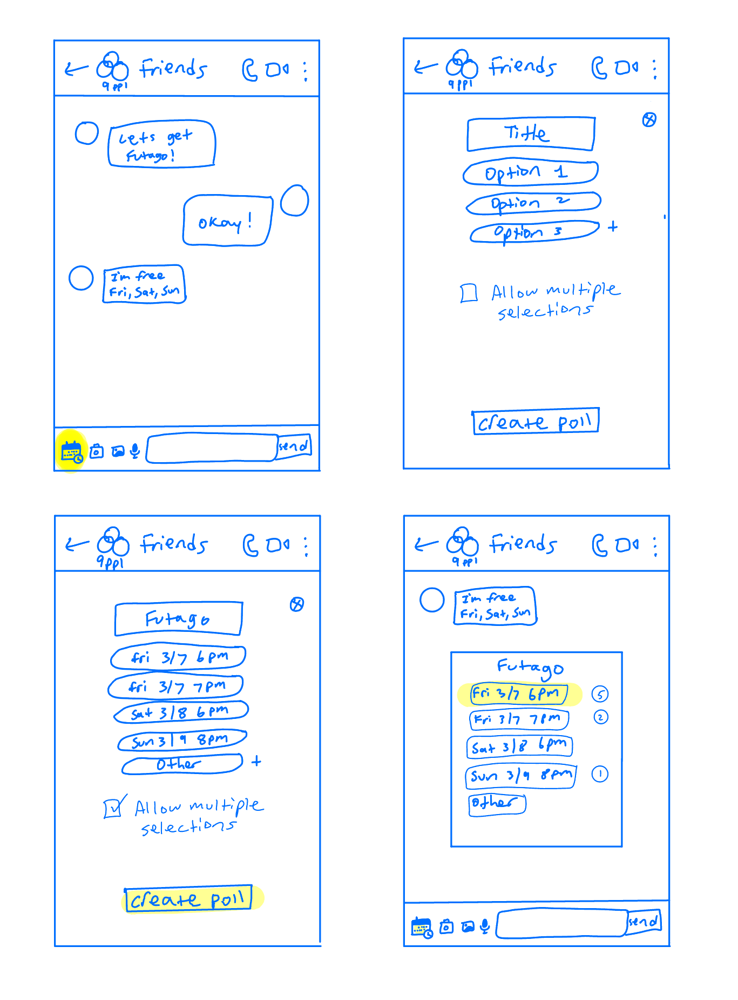
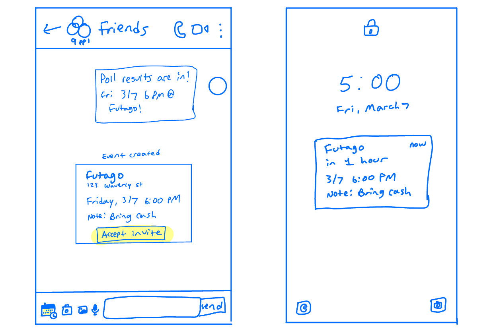
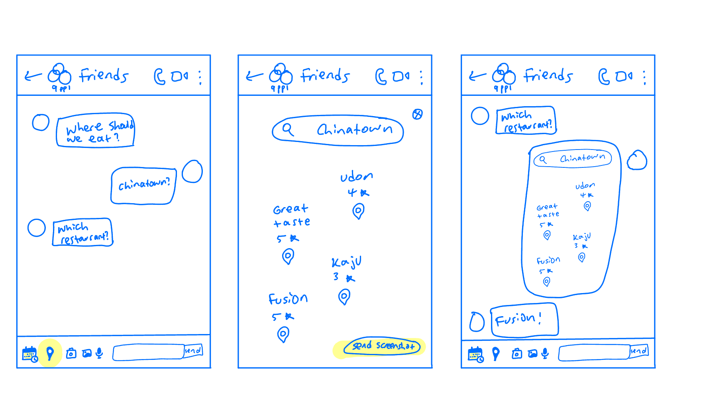

Chat Ideas
Polls for Scheduling

-
Needs addressed: An easier way to schedule a meal without
everyone having to type out their availabilities are use an external app.
-
How it aims to address: In a group chat, users can set up polls to vote
on the best days and times to meet and where they want to eat.
-
Why it might work: It's a simple and effective way to get everyone's input on a
plan by clicking which option is best for you without complicated When2Meet links.
Reminder Notification

-
Needs addressed: Sometimes people forget that they made plans to eat.
-
How it aims to address: By accepting the event, the user will be reminded
with a notification before the event.
-
Why it might work: The notification will remind users about the plans they
made, including the place, address, time, date, and additional notes so they don't forget.
Otherwise plans would be made and then not followed up about.
Finding a Place to Eat

-
Needs addressed: Users find it annoying to need to leave the app to check information about a restaurant.
Users want an easier way to find and decide on places to eat.
Users heavily consider how close a restaurant is when deciding where to eat.
-
How it aims to address: With an embedded map feature, users can search up a restaurant or a general location
and see the restaurant and other restaurants surrounding it and then send that to the chat.
-
Why it might work: Users can search a location and see a variety of restaurants in that general
area all within the app and then discuss with the rest of the group. This lets users find a
restaurant that is close and conveniently displayed in front of them. If the restaurant wait is too long,
they can go to another one nearby.